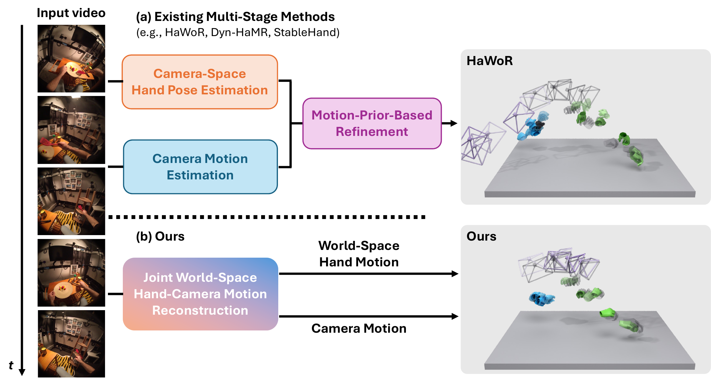
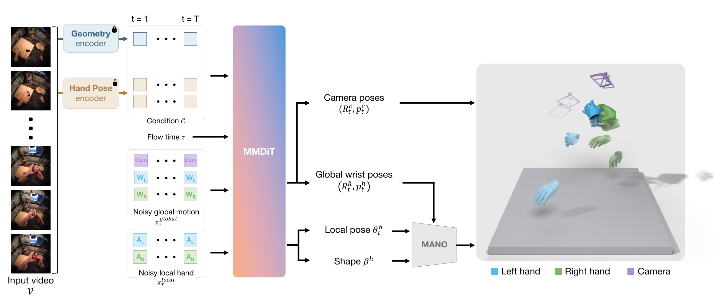

DewHand: Direct Metric World-Space
Hand Motion Reconstruction
from Egocentric Videos
1The University of Tokyo2National Institute of Informatics3NII LLMC
Preprint, 2026
Direct World-Space Reconstruction
Existing pipelines compose separately estimated hand and camera motion. DewHand directly generates their joint trajectories, keeping both hands and the moving camera in the same metric world frame. No separately estimated camera trajectory is composed with the hands after generation.

Joint Hand-Camera Flow Matching
Frozen VGGT-Ω and HaMeR encoders provide scene geometry and hand-specific features. A multimodal transformer couples global wrist and camera motion with local hand articulation, conditioned on the video. Learned mask tokens handle missing hand observations. Flow matching generates the complete hand-camera trajectory with two integration steps.

Qualitative Results
Comparisons on HOT3D, ARCTIC, HoloAssist, H2O, and TACO. Within each example, methods share a viewpoint and display scale. One SE(3) alignment is fitted jointly to both hands and applied to the camera, without scale correction.
Green: right hand. Blue: left hand. Purple: camera. Gray platforms are visual guides. Each clip is 5 seconds at 30 fps; use fullscreen for a closer view.